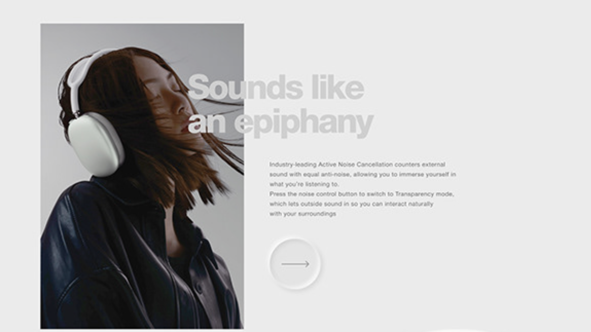
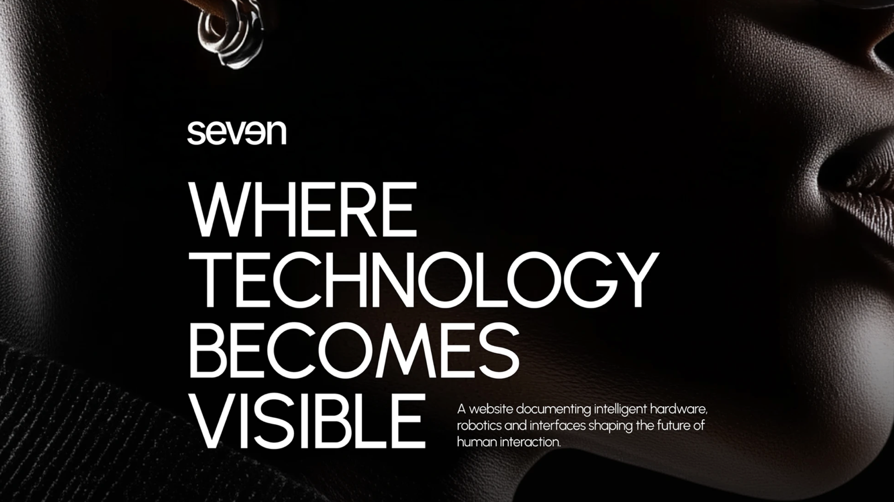
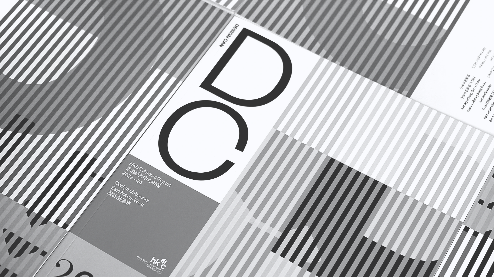
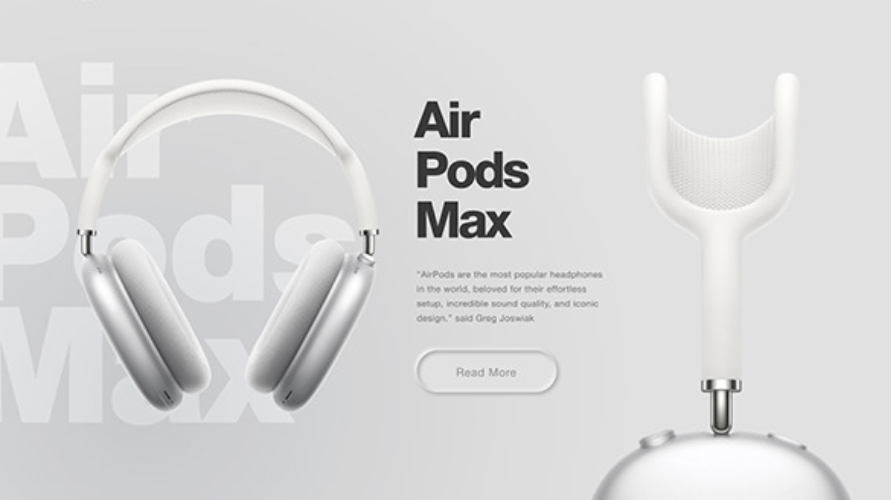
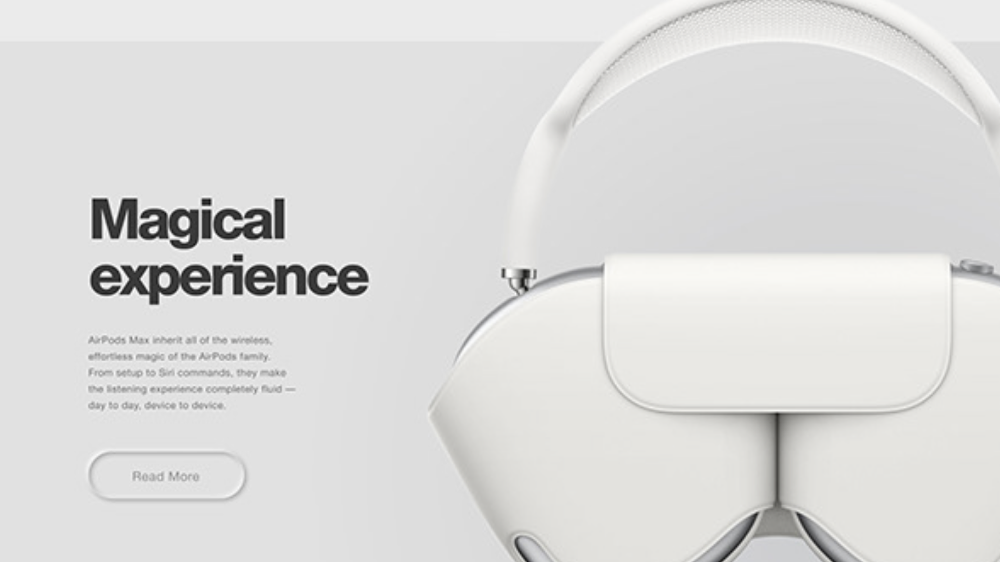
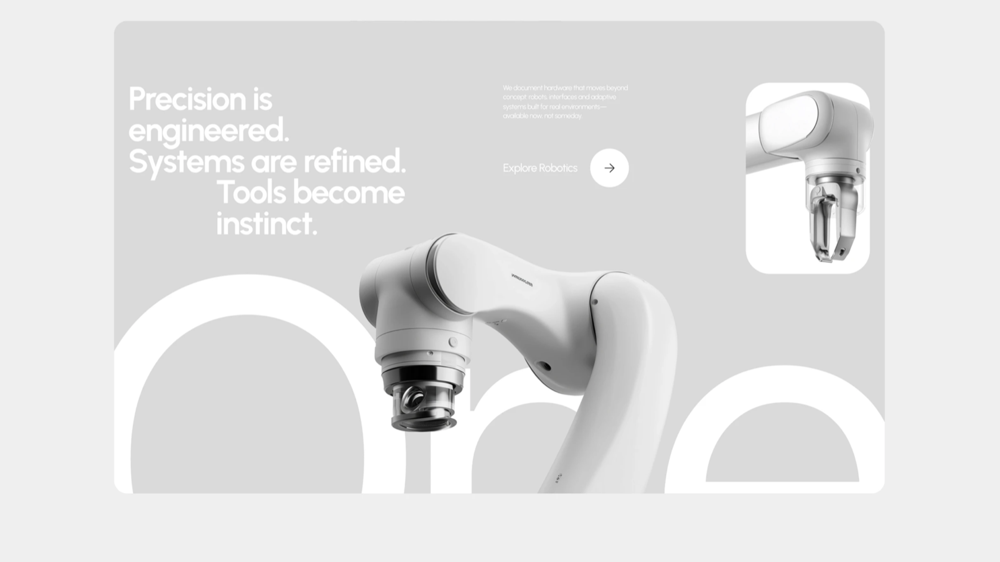

seven / unique vision
WHERE
MEDIA
BECOMES
VISIBLE
A website documenting intelligent 3D media, city-scale screens and interfaces shaping the future of human interaction.
Unique Vision combines two important ideas:
Action, drive, momentum
Scientific term “vision”
The platform makes invisible media value become visible. We do not just create designs; we initiate visual actions that lead to business growth.

DESIGN CAN
FRAME THE SCREEN
Systems / 01
Air
OOH
Max
From concept to city media deployment, every screen receives a precise visual system built for scale, clarity and repeatable impact.

3D Content
AI Adaptation
Media Delivery
Screen Calibration

Case studies / scroll to turn
Interface
Real time
human interface
Designed to extend human capability. Engineered for seamless control across online selection, AI content fitting and screen deployment.
→
Precision is engineered.
Systems are refined.
Tools become instinct.
We document hardware that moves beyond concept boards, into adaptive systems built for real environments.
→